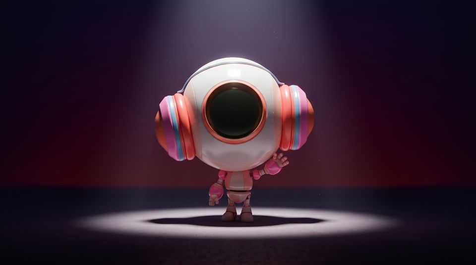
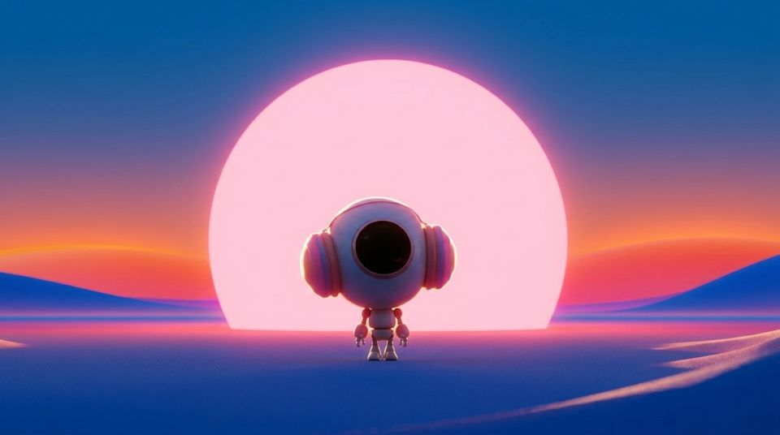

Library / Cinematic Lighting
Cinematic Lighting
9 keywords in this category, each one tested and explained in plain language.
Pick keywords as you browse, then press Copy for AI and paste into ChatGPT, Claude or any AI. Copy keywords gives a plain list for Midjourney or Seedance.

Hard Light
Small, direct sources casting crisp shadows and sharp texture; unforgiving and graphic.
High-Key Lighting
Bright, even, nearly shadowless illumination; open and optimistic.

Motivated Lighting
Cinematic light that pretends to come from the scene's own sources, enhanced invisibly.
Practical Lighting
Scenes lit by sources visible in frame: lamps, neon signs, candles, screens.

Rim Lighting
Light from behind traces a bright edge around the subject, carving them from the dark.
Silhouette
The subject reads as pure shape against a brighter background; identity through outline.
Soft Key
Large diffused main light wrapping gently around faces; flattering and calm.